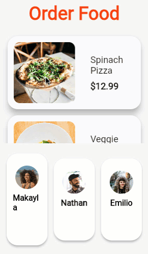

Flutter’da dokunma (tap) ve sürükleme (drag) gibi jestlerin (gestures) nasıl çalıştığını öğrenin.
Bu belge, Flutter’da jestlerin nasıl dinleneceğini ve bunlara nasıl yanıt verileceğini açıklar. Jest örnekleri arasında dokunmalar, sürüklemeler ve ölçeklendirmeler (scaling) yer alır.
Flutter’daki jest sistemi iki ayrı katmana sahiptir. İlk katman, işaretçilerin (örneğin dokunuşlar, fareler ve kalemler) ekran üzerindeki konumunu ve hareketini tanımlayan ham işaretçi olaylarına (raw pointer events) sahiptir. İkinci katman ise, bir veya daha fazla işaretçi hareketinden oluşan anlamsal eylemleri tanımlayan jestlere sahiptir.
İşaretçiler, kullanıcının cihaz ekranıyla etkileşimi hakkındaki ham verileri temsil eder. Dört tür işaretçi olayı vardır:
PointerDownEvent: İşaretçi belirli bir konumda ekrana
temas etti.PointerMoveEvent: İşaretçi ekran üzerinde bir konumdan
diğerine hareket etti.PointerUpEvent: İşaretçi ekranla temasını kesti.PointerCancelEvent: Bu işaretçiden gelen girdi artık bu
uygulamaya yönlendirilmiyor.İşaretçi aşağı indiğinde (pointer down), çerçeve (framework), işaretçinin ekrana temas ettiği konumda hangi widget’ın bulunduğunu belirlemek için uygulamanızda bir hit testi (isabet testi) yapar. İşaretçi aşağı olayı (ve o işaretçi için sonraki olaylar) daha sonra hit testi tarafından bulunan en içteki widget’a dağıtılır. Oradan olaylar ağaçta yukarı doğru çıkar (bubble up) ve en içteki widget’tan ağacın köküne kadar olan yoldaki tüm widget’lara dağıtılır. İşaretçi olaylarının daha fazla dağıtılmasını iptal etmek veya durdurmak için bir mekanizma yoktur.
İşaretçi olaylarını doğrudan widget katmanından dinlemek için bir
Listener widget’ı kullanın. Ancak, genellikle bunun yerine
(aşağıda tartışıldığı gibi) jestleri kullanmayı düşünün.
Jestler; birden fazla bireysel işaretçi olayından, hatta potansiyel olarak birden fazla bireysel işaretçiden tanınan anlamsal eylemleri (örneğin dokunma, sürükleme ve ölçeklendirme) temsil eder. Jestler, jestin yaşam döngüsüne karşılık gelen birden fazla olay dağıtabilir (örneğin sürükleme başlangıcı, sürükleme güncellemesi ve sürükleme bitişi):
onTapDown: Dokunmaya neden olabilecek bir işaretçi
belirli bir konumda ekrana temas etti.onTapUp: Dokunmayı tetikleyen bir işaretçi belirli bir
konumda ekranla temasını kesti.onTap: Daha önce onTapDown’ı tetikleyen
işaretçi, onTapUp’ı da tetikledi ve sonuçta bir dokunmaya
neden oldu.onTapCancel: Daha önce onTapDown’ı
tetikleyen işaretçi, sonuçta bir dokunmaya neden olmayacak.onDoubleTap: Kullanıcı ekranda aynı konuma hızlı bir
şekilde art arda iki kez dokundu.onLongPress: Bir işaretçi uzun bir süre boyunca ekranda
aynı konumda temas halinde kaldı.onVerticalDragStart: Bir işaretçi ekrana temas etti ve
dikey olarak hareket etmeye başlayabilir.onVerticalDragUpdate: Ekranla temas halinde olan ve
dikey olarak hareket eden bir işaretçi dikey yönde hareket etti.onVerticalDragEnd: Daha önce ekranla temas halinde olan
ve dikey olarak hareket eden bir işaretçi artık ekranla temas halinde
değil ve teması kestiğinde belirli bir hızda hareket ediyordu.onHorizontalDragStart: Bir işaretçi ekrana temas etti
ve yatay olarak hareket etmeye başlayabilir.onHorizontalDragUpdate: Ekranla temas halinde olan ve
yatay olarak hareket eden bir işaretçi yatay yönde hareket etti.onHorizontalDragEnd: Daha önce ekranla temas halinde
olan ve yatay olarak hareket eden bir işaretçi artık ekranla temas
halinde değil ve teması kestiğinde belirli bir hızda hareket
ediyordu.onPanStart: Bir işaretçi ekrana temas etti ve yatay
veya dikey olarak hareket etmeye başlayabilir.
onHorizontalDragStart veya onVerticalDragStart
ayarlanmışsa bu geri çağırma (callback) çökmeye neden olur.onPanUpdate: Ekranla temas halinde olan bir işaretçi
dikey veya yatay yönde hareket ediyor.
onHorizontalDragUpdate veya
onVerticalDragUpdate ayarlanmışsa bu geri çağırma çökmeye
neden olur.onPanEnd: Daha önce ekranla temas halinde olan bir
işaretçi artık ekranla temas halinde değil ve teması kestiğinde belirli
bir hızda hareket ediyordu. onHorizontalDragEnd veya
onVerticalDragEnd ayarlanmışsa bu geri çağırma çökmeye
neden olur.Widget katmanından gelen jestleri dinlemek için bir
GestureDetector kullanın.
Not: Daha fazla bilgi edinmek için
GestureDetectorwidget’ı hakkındaki bu kısa “Haftanın Widget’ı” videosunu izleyin.
Eğer Material Bileşenlerini (Material Components) kullanıyorsanız, bu
widget’ların çoğu zaten dokunmalara veya jestlere yanıt verir. Örneğin,
IconButton ve TextButton basışlara
(dokunmalara) yanıt verir ve ListView kaydırmayı tetiklemek
için kaydırma hareketlerine (swipes) yanıt verir. Eğer bu widget’ları
kullanmıyorsanız ancak bir dokunma işleminde “mürekkep sıçraması” (ink
splash) efekti istiyorsanız, InkWell kullanabilirsiniz.
Ekrandaki belirli bir konumda birden fazla jest algılayıcı (gesture detector) olabilir. Örneğin:
ListTile, tüm ListTile’a yanıt veren
bir dokunma tanıyıcısına (tap recognizer) ve sondaki simge düğmesinin
(trailing icon button) etrafında iç içe geçmiş bir tanıyıcıya sahiptir.
Sondaki simgenin ekran karesi (rect) artık, eğer eylem bir dokunma
olursa jesti kimin işleyeceğini müzakere etmesi gereken iki jest
tanıyıcı tarafından kapsanmaktadır.GestureDetector, uzun basma ve dokunma gibi
birden fazla jesti işlemek üzere yapılandırılmış bir ekran alanını
kapsar. Kullanıcı ekranın o kısmına dokunduğunda, tap
(dokunma) tanıyıcısı artık long press (uzun basma)
tanıyıcısı ile müzakere etmelidir. O işaretçiyle bir sonraki aşamada ne
olacağına bağlı olarak, iki tanıyıcıdan biri jesti alır veya kullanıcı
ne dokunma ne de uzun basma olan bir şey yaparsa hiçbiri jesti
almaz.Bu jest algılayıcıların tümü, işaretçi olayları akışını dinler ve
belirli jestleri tanımaya çalışır. GestureDetector
widget’ı, hangi geri aramalarının (callbacks) null olmadığına (dolu
olduğuna) bağlı olarak hangi jestleri tanımaya çalışacağına karar
verir.
Ekranda belirli bir işaretçi için birden fazla jest tanıyıcı olduğunda, çerçeve (framework), her tanıyıcının jest arenasına (gesture arena) katılmasını sağlayarak kullanıcının hangi jesti kastettiğini ayırt eder. Jest arenası, aşağıdaki kuralları kullanarak hangi jestin kazanacağını belirler:
Örneğin, yatay ve dikey sürüklemeyi ayırt ederken, her iki tanıyıcı da işaretçi aşağı (pointer down) olayını aldıklarında arenaya girerler. Tanıyıcılar işaretçi hareket olaylarını gözlemler. Kullanıcı işaretçiyi yatay olarak belirli bir mantıksal piksel sayısından fazla hareket ettirirse, yatay tanıyıcı zaferini ilan eder ve jest yatay bir sürükleme olarak yorumlanır. Benzer şekilde, kullanıcı dikey olarak belirli bir mantıksal piksel sayısından fazla hareket ederse, dikey tanıyıcı kendini kazanan ilan eder.
Jest arenası, yalnızca yatay (veya dikey) bir sürükleme tanıyıcısı olduğunda faydalıdır. Bu durumda, arenada yalnızca bir tanıyıcı vardır ve yatay sürükleme hemen tanınır; bu da yatay hareketin ilk pikselinin bir sürükleme olarak ele alınabileceği ve kullanıcının daha fazla jest ayrımı beklemesine gerek kalmayacağı anlamına gelir.
Dokunma ve sürüklemenin nasıl işleneceği.
Kullanıcılara yalnızca bilgi görüntülemek istemezsiniz,
kullanıcıların uygulamanızla etkileşime girmesini de istersiniz. Dokunma
ve sürükleme gibi temel eylemlere yanıt vermek için
GestureDetector widget’ını kullanın.
Not: Daha fazla bilgi edinmek için
GestureDetectorwidget’ı hakkındaki bu kısa “Haftanın Widget’ı” videosunu izleyin.
Bu tarif, aşağıdaki adımlarla dokunulduğunda bir
snackbar gösteren özel bir düğmenin nasıl yapılacağını
gösterir:
GestureDetector ile sarın ve bir
onTap() geri çağırma işlevi (callback) sağlayın.// GestureDetector düğmeyi sarar.
GestureDetector(
// Çocuğa (child) dokunulduğunda bir snackbar göster.
onTap: () {
const snackBar = SnackBar(content: Text('Tap'));
ScaffoldMessenger.of(context).showSnackBar(snackBar);
},
// Özel düğme
child: Container(
padding: const EdgeInsets.all(12),
decoration: BoxDecoration(
color: Colors.lightBlue,
borderRadius: BorderRadius.circular(8),
),
child: const Text('My Button'),
),
)ElevatedButton,
TextButton ve CupertinoButton.Etkileşimli örnek
import 'package:flutter/material.dart';
void main() => runApp(const MyApp());
class MyApp extends StatelessWidget {
const MyApp({super.key});
@override
Widget build(BuildContext context) {
const title = 'Gesture Demo';
return const MaterialApp(
title: title,
home: MyHomePage(title: title),
);
}
}
class MyHomePage extends StatelessWidget {
final String title;
const MyHomePage({super.key, required this.title});
@override
Widget build(BuildContext context) {
return Scaffold(
appBar: AppBar(title: Text(title)),
body: const Center(child: MyButton()),
);
}
}
class MyButton extends StatelessWidget {
const MyButton({super.key});
@override
Widget build(BuildContext context) {
// The GestureDetector wraps the button.
return GestureDetector(
// When the child is tapped, show a snackbar.
onTap: () {
const snackBar = SnackBar(content: Text('Tap'));
ScaffoldMessenger.of(context).showSnackBar(snackBar);
},
// The custom button
child: Container(
padding: const EdgeInsets.all(12),
decoration: BoxDecoration(
color: Colors.lightBlue,
borderRadius: BorderRadius.circular(8),
),
child: const Text('My Button'),
),
);
}
}Bu doküman, Flutter uygulamanızda sürükle-bırak (drag and drop) işlevselliğinin nasıl uygulanacağını, özellikle de uygulama içi ve uygulamalar arası (işletim sistemi ile etkileşimli) yöntemleri ele almaktadır.
Sürükle ve bırak işlemlerini uygulamanızda gerçekleştirmek için temelde iki farklı yol izleyebilirsiniz:
super_drag_and_drop
paketi).Eğer amacınız sadece kendi uygulamanızın sınırları içinde bir öğeyi bir yerden başka bir yere taşımaksa, Flutter’ın yerleşik widget’larını kullanabilirsiniz.
DraggableDraggable widget’ı,
kullanıcının ekrandaki bir öğeyi sürüklemesine olanak tanır.Draggable ve
DragTarget kullanmanın en büyük avantajı, bir bırakma
işleminin kabul edilip edilmeyeceğine karar vermek için Dart
kodu kullanabilmenizdir. Tam kontrol sizdedir.Eğer uygulamanızdan başka bir uygulamaya (örneğin bir dosyayı işletim sisteminin masaüstüne veya Flutter ile yazılmamış başka bir uygulamaya) veri sürüklemek istiyorsanız yerleşik widget’lar yeterli olmayacaktır.
super_drag_and_drop
paketi (pub.dev üzerinden erişilebilir).Draggable kullanımından temel bir farktır.| Özellik | Draggable Widget |
super_drag_and_drop Paketi |
|---|---|---|
| Kullanım Alanı | Sadece Uygulama İçi | Uygulama İçi ve Uygulamalar Arası |
| Kontrol Mekanizması | Dart kodu ile anlık karar | Önceden tanımlanmış veri tipleri |
| Platform İletişimi | Yok | Var (İşletim sistemi ile konuşur) |
| Yapı | Yerleşik (Native) | Harici Paket (External) |
Sürükle ve bırak (Drag and drop), yaygın bir mobil uygulama etkileşimidir. Kullanıcı bir widget’a uzun bastığında (bazen “dokun ve basılı tut” olarak adlandırılır), kullanıcının parmağının altında başka bir widget belirir ve kullanıcı widget’ı son bir konuma sürükleyip bırakır. Bu tarifte, kullanıcının bir yiyecek seçeneğine uzun bastığı ve ardından o yiyeceği ödemeyi yapan müşterinin resmine sürüklediği bir sürükle-bırak etkileşimi oluşturacaksınız.

Bu tarif, önceden oluşturulmuş bir menü öğeleri listesi ve bir müşteri satırı ile başlar. İlk adım, uzun basmayı tanımak ve bir menü öğesinin sürüklenebilir bir fotoğrafını görüntülemektir.
Flutter, bir sürükle-bırak etkileşimini başlatmak için tam olarak
ihtiyacınız olan davranışı sağlayan
LongPressDraggable adlı bir widget sunar.
LongPressDraggable widget’ı, uzun bir basışın ne zaman
gerçekleştiğini tanır ve ardından kullanıcının parmağının yakınında yeni
bir widget görüntüler. Kullanıcı sürükledikçe, widget kullanıcının
parmağını takip eder. LongPressDraggable, kullanıcının
sürüklediği widget üzerinde size tam kontrol sağlar.
Her menü listesi öğesi özel bir MenuListItem widget’ı
ile görüntülenir.
MenuListItem(
name: item.name,
price: item.formattedTotalItemPrice,
photoProvider: item.imageProvider,
)MenuListItem widget’ını bir
LongPressDraggable widget’ı ile sarın.
LongPressDraggable<Item>(
data: item,
dragAnchorStrategy: pointerDragAnchorStrategy,
feedback: DraggingListItem(
dragKey: _draggableKey,
photoProvider: item.imageProvider,
),
child: MenuListItem(
name: item.name,
price: item.formattedTotalItemPrice,
photoProvider: item.imageProvider,
),
);Bu durumda, kullanıcı MenuListItem widget’ına uzun
bastığında, LongPressDraggable widget’ı bir
DraggingListItem görüntüler. Bu
DraggingListItem, seçilen yiyecek öğesinin bir fotoğrafını
kullanıcının parmağının altında ortalanmış olarak gösterir.
dragAnchorStrategy özelliği
pointerDragAnchorStrategy olarak ayarlanmıştır. Bu özellik
değeri, LongPressDraggable’a
DraggableListItem’ın konumunu kullanıcının parmağına
dayandırmasını söyler. Kullanıcı parmağını hareket ettirdikçe,
DraggableListItem da onunla birlikte hareket eder.
Öğe bırakıldığında hiçbir bilgi iletilmezse sürükleyip bırakmanın pek
bir yararı yoktur. Bu nedenle, LongPressDraggable bir
data parametresi alır. Bu durumda,
data’nın türü, kullanıcının bastığı yiyecek menüsü öğesi
hakkında bilgi tutan Item’dır.
Bir LongPressDraggable ile ilişkili data,
kullanıcı sürükleme hareketini bıraktığında
DragTarget adlı özel bir widget’a
gönderilir. Bırakma davranışını bir sonraki adımda uygulayacaksınız.
Kullanıcı LongPressDraggable öğesini istediği yere
bırakabilir, ancak sürüklenebilir öğe bir DragTarget
üzerine bırakılmadığı sürece hiçbir etkisi olmaz. Kullanıcı bir
sürüklenebilir öğeyi bir DragTarget widget’ının üzerine
bıraktığında, DragTarget widget’ı sürüklenebilir öğeden
gelen verileri kabul edebilir veya reddedebilir.
Bu tarifte, kullanıcı bir menü öğesini kullanıcının sepetine eklemek
için bir CustomerCart widget’ına bırakmalıdır.
CustomerCart(
hasItems: customer.items.isNotEmpty,
highlighted: candidateItems.isNotEmpty,
customer: customer,
);CustomerCart widget’ını bir DragTarget
widget’ı ile sarın.
DragTarget<Item>(
builder: (context, candidateItems, rejectedItems) {
return CustomerCart(
hasItems: customer.items.isNotEmpty,
highlighted: candidateItems.isNotEmpty,
customer: customer,
);
},
onAcceptWithDetails: (details) {
_itemDroppedOnCustomerCart(item: details.data, customer: customer);
},
)DragTarget, mevcut widget’ınızı görüntüler ve ayrıca
kullanıcının bir sürüklenebilir öğeyi DragTarget üzerine ne
zaman sürüklediğini tanımak için LongPressDraggable ile
koordine olur. DragTarget ayrıca kullanıcının bir
sürüklenebilir öğeyi DragTarget widget’ının üzerine ne
zaman bıraktığını da tanır.
Kullanıcı bir sürüklenebilir öğeyi DragTarget widget’ı
üzerinde sürüklediğinde, candidateItems kullanıcının
sürüklediği veri öğelerini içerir. Bu, kullanıcı üzerindeyken
widget’ınızın nasıl görüneceğini değiştirmenize olanak tanır. Bu
durumda, herhangi bir öğe DragTarget widget’ının üzerine
sürüklendiğinde Customer widget’ı kırmızıya döner. Kırmızı
görsel görünüm, CustomerCart widget’ındaki
highlighted özelliği ile yapılandırılır.
Kullanıcı bir sürüklenebilir öğeyi DragTarget widget’ına
bıraktığında, onAcceptWithDetails geri çağrısı (callback)
çağrılır. Bu, bırakılan verileri kabul edip etmeyeceğinize karar
verdiğiniz andır. Bu durumda, öğe her zaman kabul edilir ve işlenir.
Farklı bir karar vermek için gelen öğeyi incelemeyi seçebilirsiniz.
DragTarget üzerine bırakılan öğenin türünün,
LongPressDraggable’dan sürüklenen öğenin türüyle eşleşmesi
gerektiğini unutmayın. Türler uyumlu değilse,
onAcceptWithDetails yöntemi çağrılmaz.
İstediğiniz verileri kabul edecek şekilde yapılandırılmış bir
DragTarget widget’ı ile artık verileri sürükleyip bırakarak
kullanıcı arayüzünüzün bir bölümünden diğerine aktarabilirsiniz.
Bir sonraki adımda, müşterinin sepetini bırakılan menü öğesiyle güncelleyeceksiniz.
Her müşteri, bir ürün sepeti ve toplam fiyat tutan bir
Customer nesnesi ile temsil edilir.
class Customer {
Customer({required this.name, required this.imageProvider, List<Item>? items})
: items = items ?? [];
final String name;
final ImageProvider imageProvider;
final List<Item> items;
String get formattedTotalItemPrice {
final totalPriceCents = items.fold<int>(
0,
(prev, item) => prev + item.totalPriceCents,
);
return '\$${(totalPriceCents / 100.0).toStringAsFixed(2)}';
}
}CustomerCart widget’ı, bir Customer
örneğine dayalı olarak müşterinin fotoğrafını, adını, toplamını ve ürün
sayısını görüntüler.
Bir menü öğesi bırakıldığında bir müşterinin sepetini güncellemek
için, bırakılan öğeyi ilgili Customer nesnesine
ekleyin.
void _itemDroppedOnCustomerCart({
required Item item,
required Customer customer,
}) {
setState(() {
customer.items.add(item);
});
}_itemDroppedOnCustomerCart yöntemi, kullanıcı bir menü
öğesini bir CustomerCart widget’ına bıraktığında
onAcceptWithDetails() içinde çağrılır. Bırakılan öğeyi
customer nesnesine ekleyerek ve bir düzen güncellemesine
neden olmak için setState()’i çağırarak, kullanıcı arayüzü
yeni müşterinin fiyat toplamı ve ürün sayısıyla yenilenir.
Tebrikler! Müşterinin alışveriş sepetine yiyecek öğeleri ekleyen bir sürükle-bırak etkileşimine sahipsiniz.
Uygulamayı çalıştırın:
Material Design yönergelerini takip eden widget’lar, kullanıcı üzerlerine dokunduğunda bir dalgalanma (ripple) animasyonu görüntüler. Bu, kullanıcıya etkileşimin algılandığına dair görsel bir geri bildirim sağlar.
Flutter’da bu efekti uygulamak için
InkWell widget’ı kullanılır.
Bir widget’a dalgalanma efekti eklemek için şu adımları izleyin:
InkWell
widget’ı ile sarın.Aşağıdaki örnekte, basit bir metin widget’ı InkWell ile
sarılarak tıklanabilir hale getirilmiş ve tıklandığında Material
dalgalanma efekti vermesi sağlanmıştır.
// InkWell, oluşturduğumuz özel butonu sarmalar
InkWell(
// Kullanıcı butona dokunduğunda çalışacak fonksiyon
onTap: () {
ScaffoldMessenger.of(context).showSnackBar(
const SnackBar(content: Text('Dokunuldu (Tap)')),
);
},
// Görünecek olan içerik (Buton tasarımı)
child: const Padding(
padding: EdgeInsets.all(12),
child: Text('Flat Button'),
),
)InkWell widget’ının dalgalanma efektinin düzgün
görünebilmesi için genellikle bir Material widget’ı
üzerinde olması veya arka plan renginin Ink widget’ı ile
verilmesi gerekir. Eğer InkWell’in çocuğu (child) opak bir
renk içeren bir Container ise, dalgalanma efekti o rengin
altında kalabilir ve görünmeyebilir.
“Kaydırarak silme” (Swipe to dismiss) deseni, birçok mobil uygulamada yaygındır. Örneğin, bir e-posta uygulamasında kullanıcıların mesajları listeden silmek için yana kaydırmasına izin vermek isteyebilirsiniz.
Flutter, bu görevi Dismissible widget’ı
ile oldukça kolaylaştırır.
Bu özelliği uygulamak için şu 3 temel adımı izleyeceğiz:
Dismissible widget’ı ile sarmalamak.Öncelikle üzerinde çalışacağımız bir veri kaynağına ihtiyacımız var. Basit olması için 20 adet String içeren bir liste oluşturalım.
final items = List<String>.generate(20, (i) => 'Öğe ${i + 1}');Başlangıçta, bu öğeleri ekranda göstermek için
ListView.builder kullanırız. Ancak şu aşamada kullanıcılar
henüz kaydırma yapamazlar.
ListView.builder(
itemCount: items.length,
itemBuilder: (context, index) {
return ListTile(title: Text(items[index]));
},
)Kullanıcılara öğeyi kaydırarak listeden atma özelliği kazandırmak
için Dismissible widget’ını kullanırız.
Kullanıcı bir öğeyi kaydırıp attıktan sonra, bu öğeyi veri listesinden silmemiz ve kullanıcıya bir geri bildirim (örneğin bir Snackbar) göstermemiz gerekir. Gerçek bir uygulamada, bu aşamada veritabanından veya sunucudan silme işlemi de yapılabilir.
itemBuilder fonksiyonunu şu şekilde güncelleyin:
itemBuilder: (context, index) {
final item = items[index];
return Dismissible(
// Her Dismissible bir Key içermelidir. Key'ler Flutter'ın
// widget'ları benzersiz şekilde tanımlamasını sağlar.
key: Key(item),
// Öğe kaydırıldıktan sonra ne yapılacağını söyleyen fonksiyon
onDismissed: (direction) {
// 1. Öğeyi veri kaynağından silin
setState(() {
items.removeAt(index);
});
// 2. Kullanıcıya bilgi veren bir Snackbar gösterin
ScaffoldMessenger.of(context).showSnackBar(
SnackBar(content: Text('$item silindi')),
);
},
// Listede görünen asıl öğe
child: ListTile(title: Text(item)),
);
},Mevcut durumda öğeler kaydırılabiliyor ancak kaydırma esnasında arkada ne olduğu veya ne olacağıyla ilgili görsel bir ipucu yok. Kullanıcıya öğenin silindiğini hissettirmek için, öğe kaydırıldığında arkada görünen bir renk (genellikle kırmızı) eklemeliyiz.
Bunun için Dismissible widget’ının
background parametresini kullanırız.
Dismissible(
key: Key(item),
onDismissed: (direction) {
// ... silme işlemleri ...
},
// Öğe kaydırıldığında arkada görünen kırmızı zemin
background: Container(color: Colors.red),
child: ListTile(title: Text(item)),
);import 'package:flutter/material.dart';
void main() {
runApp(const MyApp());
}
// MyApp is a StatefulWidget. This allows updating the state of the
// widget when an item is removed.
class MyApp extends StatefulWidget {
const MyApp({super.key});
@override
MyAppState createState() {
return MyAppState();
}
}
class MyAppState extends State<MyApp> {
final items = List<String>.generate(20, (i) => 'Item ${i + 1}');
@override
Widget build(BuildContext context) {
const title = 'Dismissing Items';
return MaterialApp(
title: title,
theme: ThemeData(
colorScheme: ColorScheme.fromSeed(seedColor: Colors.deepPurple),
),
home: Scaffold(
appBar: AppBar(title: const Text(title)),
body: ListView.builder(
itemCount: items.length,
itemBuilder: (context, index) {
final item = items[index];
return Dismissible(
// Each Dismissible must contain a Key. Keys allow Flutter to
// uniquely identify widgets.
key: Key(item),
// Provide a function that tells the app
// what to do after an item has been swiped away.
onDismissed: (direction) {
// Remove the item from the data source.
setState(() {
items.removeAt(index);
});
// Then show a snackbar.
ScaffoldMessenger.of(
context,
).showSnackBar(SnackBar(content: Text('$item dismissed')));
},
// Show a red background as the item is swiped away.
background: Container(color: Colors.red),
child: ListTile(title: Text(item)),
);
},
),
),
);
}
}Bu doküman, Flutter resmi dokümantasyonundan türetilmiş Türkçe ders notudur.
Orijinal kaynak:
https://docs.flutter.dev/ui/interactivity/gestures
Türkçe çeviri ve düzenleme:
Doç. Dr. Hakan Temiz
Bu dokümandaki içerikler aşağıdaki açık lisanslar kapsamında sunulmaktadır:
Metin içerikleri (anlatım ve açıklamalar):
Flutter resmi dokümantasyonundan alınmış veya uyarlanmıştır.
Lisans: Creative Commons Attribution 4.0 International
(CC BY 4.0)
https://creativecommons.org/licenses/by/4.0/
Bu lisans kapsamında: - İçerik kopyalanabilir, dağıtılabilir ve
uyarlanabilir
- Ticari kullanım serbesttir
- Kaynak belirtilmesi zorunludur
Kod örnekleri:
Flutter resmi dokümantasyonundan alınmış veya uyarlanmıştır.
Lisans: BSD 3-Clause License
https://opensource.org/licenses/BSD-3-Clause
Bu lisans kapsamında: - Kodlar kopyalanabilir, değiştirilebilir ve
dağıtılabilir
- Ticari kullanım serbesttir
- Lisans bildiriminin korunması gerekir